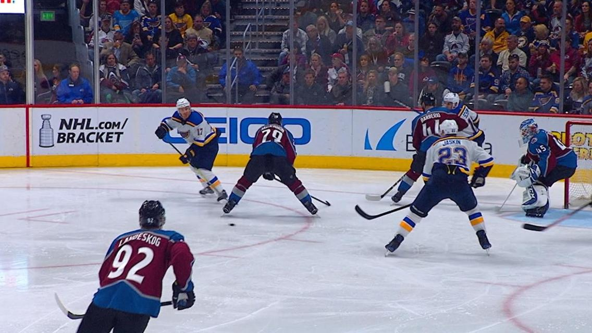

Ice hockey is a sport where a team uses sticks to hit a puck in the goal. Skates are normally blackish boots with a plastic holder that holds the blades. Unlike figure skates, hockey skates have no toe picks. Hockey requires skill and ability while on ice.
Most teams require skaters to have some skill before actually being on the team. In the United States, programs required are typically as follows:
Hockey teams are highly demanding, requiring time and energy. Plays are reviewed, and positions are chosen before the season starts. Most schools have hockey teams, including varisty and junior varisty, and most rinks also have club teams. Skaters need to be intense in order to fully focus during games.
